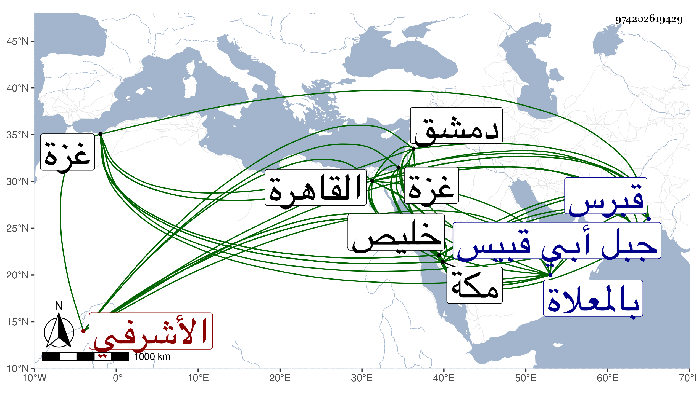

0902Sakhawi.DawLamic.ITO20230111-ara1.EIS1600.974202619429
Biography ID: 974202619429
20
بردبك الأشرفي اينال . ملكه في سني قبرس سنة تسع وعشرين وثمانمائة فرباه وأعتقه وعمله خازنداره وزوجه ابنته الكبرى ثم دواداره فلما تسلطن عمله دوادارا ثالثا مع اقطاعه امرة عشرة ثم نقله إلى الدوادارية في سنة تسع وثمانين واستقر في امرته أنيه شاذبك بن صديق وفي الشادية قانصوه الطويل الاشرفي برسباي بعد نفي تمراز الأشرفي فارتقى في العظمة ونفوذ الكلمة وقصده الناس في حوائجهم فساس الامور وادخر الأموال الكثيرة سوى ما ينفده في الصدقات والانعامات ونحو ذلك وعقد ببيته في الاشهر الثلاثة مجلسا للبخاري فهرع الجل من الفقهاء والقضاة وشبههم له وبلغ به كثير منهم لمقاصد وكنت ممن خطب للحضور فيه وزيد في الالحاح عليه فما انشرح الخاطر لذلك بل بنى بقناطر السباع جامعا هائلا وكذا بغزة ودمشق ، كل ذلك مع كثرة مماليكه وزيادة حشمه واستمر على وجاهته إلى أن مات أستاذه ، واستقر ابنه وكان على عادته بل لما خلع صودر بأخذ ما يفوق الوصف من الاموال ثم أمر بلزوم داره إلى أن رسم له بالتوجه لمكة فتوجه ببنيه وعياله في موسم سنة ست وستين فأقام بها على طريقة حسنة وعمل له مكانا على جبل أبي قبيس ينفرد به أو يتنزه إلى أن سمح له بالعود إلى القاهرة فسافر صحبة الحاج فلما قرب من خليص محل يقال له الديمة ركب بغلة وسبق بمفرده مع السقائين فخرج عليه جماعة من العربان فسلبوا السقائين ثم قتلوه وهم لا يعرفونه بحربة ولم يستلبوه وذلك في يوم الأحد منتصف ذي الحجة سنة ثمان وستين فحمل إلى خليص فغسل بها وكفن وصلى عليه ودفن إلى أن نقل إلى مكة في السنة التي بعدها وكان وصول جثته في يوم الاحد خامس رجب ودفن بالمعلاة وجعل عليه قبة رحمه الله وعفا عنه وقد جاز الخمسين تقريبا وكان عاقلا سيوسا ضخما إلى الطول والشقرة أقرب متواضعا ذا أدب وحشمة ومحبة للفقراء والصالحين ومزيد إحسان وبر لهم حتى انه تفقد بعد زوال عزه وقبل خروجه إلى مكة كثيرا من الطائفتين بالمال الجزيل بل وإلفاته غالبا لأستاذه إلى الخير والمعروف مع الحرص على جمع المال بطرق يدبرها ومع معرفته للكلام العربي وسرعته لتأديته بدون توقف ولكنه كان يلثغ بعدة حروف وهو الذي قرب البقاعي وخالف غرض أستاذه في قصد إبعاده حتى نال وجاهة دنيوية ولكنه لم يتجر معه في جميع مقاصده ولذا خاطبه بعد انقضاء ايامه بمكروه كبير وأظهر التشفي منه بذلك بحيث ان الأمير قال لقاضي مكة البرهاني ابن ظهيرة انه خيلني من صحبة كل فقيه ونحو ذلك مما حكاه البرهاني ، هذا مع كونه في أيام عطلته مشى من بيته إلى المسجد الذي فيه البقاعي حتى خلصه من نقيبين اشتكاه بهما بعض الاتراك من جيرانه ووزن لهما الغرامة من عنده بل لما قدم أولاده القاهرة بعد قتله لم يجئ للسلام عليهم ولا عزاهم مع قرب بيتهم منه جدا ثم جاءهم بعد مدة وخيلهم من أمر يحصل بزعمه التخلص منه بدفع قدر كبير لبعض أتباع الظاهر خشقدم قاصدا بذلك جر النفع له ليحظى به عنده وأبدى ذلك في قالب النصح حسبما أخبرني به أكبرهم .
